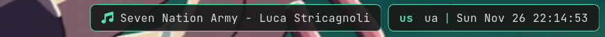

Block
Blocks are the widgets displaying pieces of information on the bar.
oatbar provides a lot of hidden power via these widgets, as they can provide
more than they initially seem. Consider that the most of the string properties
of blocks support variable substitution, directly controlled by your scripts.
The reference below explains properties of these blocks and the Cookbook shows how to use them in a very clever way.
- Example
- Configuration Inheritance
- Text block
- Number block
- Enum block
- Image block
- Popups and Visibility
All blocks share the following properties.
| Property | Type | Default | Description |
|---|---|---|---|
name | string | Required | Unique identifier for the block. |
type | string | text | Block type: text, number, enum, image. |
value | string | "" | The content to display. Supports variables (e.g., ${cmd:var}). |
show_if_matches | list | [] | List of [expression, regex] pairs. Block is visible only if all regexes match. |
replace | list | [] | List of [regex, replacement] pairs applied to value. |
replace_first_match | bool | true | If false, applies all replacements; if true, stops after first match. |
output_format | string | None | Final formatting string (e.g., CPU: ${value}). |
pango_markup | bool | true | Enable Pango Markup parsing. |
font | string | inherit | Font definition (e.g., Monospace 12). |
background | color | transparent | Background color (Hex #RRGGBB or #RRGGBBAA). |
foreground | color | inherit | Text color. |
line_width | float | 1.1 | Width of border lines. |
overline_color | color | None | Color of the top border line. |
underline_color | color | None | Color of the bottom border line. |
edgeline_color | color | None | Color of the side border lines (left/right). |
hover_background | color | None | Background color on hover. |
hover_foreground | color | None | Text color on hover. |
hover_line_width | float | None | Width of border lines on hover. |
hover_overline_color | color | None | Color of the top border line on hover. |
hover_underline_color | color | None | Color of the bottom border line on hover. |
hover_edgeline_color | color | None | Color of the side border lines (left/right) on hover. |
margin | float | 0.0 | Space outside the block. |
padding | float | 8.0 | Space inside the block (around text). |
separator_type | string | None | Separator style: left, right, gap. |
separator_radius | float | 0.0 | Radius for rounded separators. |
popup | string | None | Popup behavior: block, partial_bar, bar. |
popup_value | string | None | Variable that triggers the popup on change. |
on_mouse_left | string | None | Command to run on left click. |
on_mouse_middle | string | None | Command to run on middle click. |
on_mouse_right | string | None | Command to run on right click. |
on_scroll_up | string | None | Command to run on scroll up. |
on_scroll_down | string | None | Command to run on scroll down. |
Example
[[block]]
name="clock"
type="text"
value="<span weight='bold'>${clock:value}</span>"
background="#1e1e2e"
foreground="#cdd6f4"
padding=8
margin=4
line_width=2.0
underline_color="#fab387"
on_mouse_left="calendar"
show_if_matches=[["${clock:value}", ".+"]]
Configuration Inheritance
To avoid repetition, you can use default_block to define common properties. oatbar uses a cascading configuration system:
- Global Default: A
[[default_block]]without anameapplies to all blocks. - Named Default: A
[[default_block]]with anameinherits from the Global Default. - Block: A
[[block]]inherits from a Named Default (ifinheritis set) or directly from the Global Default.
Global Default Example
This sets a default background for every block in the bar.
[[default_block]]
background="#202020"
padding=5
Named Default Example
You can define specific styles (e.g., “active” vs “inactive”) and apply them to specific blocks.
[[default_block]]
name="active_style"
background="#fab387"
foreground="#1e1e2e"
[[block]]
name="my_block"
inherit="active_style"
value="I am active!"
In this case, my_block will have:
padding=5(from Global Default)background="#fab387"(from Named Default “active_style”, overriding Global)foreground="#1e1e2e"(from Named Default “active_style”)value="I am active!"(from Block)
Text block
[[block]]
type="text"
Text blocks include all common properties, which should be enough to show basic text or icons using Pango markup, icon fonts such as Font Awesome, Nerd Fonts, IcoMoon or emojis.
In addition, text blocks are used as separators to create partial bars. They are smaller bars within a bar that groups multiple blocks together.

[[bar]]
blocks_right=["L", "music", "R", "E", "L", "layout", "S", "clock", "R"]
[[block]]
name="music"
...
show_if_matches = [['${player:now_playing.full_text}', '.+']]
popup = "partial_bar"
[[block]]
name="S"
type = "text"
separator_type = "gap"
value = "|"
[[block]]
name="E"
type = "text"
separator_type = "gap"
value = " "
background = "#00000000"
[[block]]
name="L"
type = "text"
separator_type = "left"
separator_radius = 8.0
[[block]]
name="R"
type = "text"
separator_type = "right"
separator_radius = 8.0
separator_type gives a hint on where partial bars are located.
This helps when popup="partial_bar". It also helps to collapse
unnecessary separators when normal blocks around them are hidden.
Number block
[[block]]
type="number"
Number can be displayed as text on the text block. But the real value comes when the bar understands that the data is a number.
In addition to common properties, the number blocks support unit conversions and alternative forms of display, such as progress bars.
# Min/max values are used in progress bars.
# They are set as string because they support
# variable substituion and can be specified in units.
min_value="0"
max_value="1000"
# A number type that input represents.
# - number - a number from min to max
# - percent - a number from 0 to 100, '%' is ommitted from the input when parsing.
# - bytes - a number that supports byte unit suffixes, e.g. "GB", "kb",
# - See https://docs.rs/bytesize/latest/bytesize/
number_type="percent"
# A sorted list of ramp formats. If set, prior to wrapping with `output_format`,
# wrap to the format from the entry larger than `value`.
ramp = [
["80%", "<span foreground='yellow'>${value}</span>"],
["90%", "<span foreground='red'>${value}</span>"],
]
number_display can be used to select the widget that is going to display your
number on the block.
Number as text
You can display the number as text as you would have with a text block, but there
is a benefit of additional functionality, such as unit conversions and ramp
functionality.
[[block]]
type="number"
name="cpu"
...
number_display="progress_bar"
Progress bar
[[block]]
type="number"
name="cpu"
...
number_display="progress_bar"
# How many characters to use for the progress bar.
progress_bar_size=10
# Progress bar characters. In this example would render: "━━━━雷 "
empty=" "
fill="━"
indicator="雷"
# Each of the above can be a ramp
# fill = [
# ["", "━"],
# ["60%", "<span foreground='yellow'>━</span>"],
# ["90%", "<span foreground='red'>━</span>"],
# ]
Enum block
[[block]]
type="enum"
Enum is different from text block as it renders multiple child text blocks called
variants, only one of which is active. Example: keyboard layout switch.
Almost every common property related to block display has an active_ counterpart to configure the active variant.
| Property | Description |
|---|---|
active_font | Font for the active variant. |
active_background | Background color for the active variant. |
active_foreground | Text color for the active variant. |
active_line_width | Border line width for the active variant. |
active_overline_color | Top border color for the active variant. |
active_underline_color | Bottom border color for the active variant. |
active_edgeline_color | Side border color for the active variant. |
active_margin | Margin for the active variant. |
active_padding | Padding for the active variant. |
active_output_format | Format string for the active variant. |
active_pango_markup | Enable/disable Pango markup for the active variant. |
active_hover_... | All hover_ properties are also available with active_ prefix (e.g. active_hover_background). |
# A separated list of variants, e.g. "ua,se,us".
variants = '${keyboard:layout.variants}'
# An index of the item that is to be active starting from 0.
active = '${keyboard:layout.active}'
# A separator for the variants list. Default: ",".
enum_separator="|"
Text processing via replace is done per item of the variants separately,
not together. If an variant becomes empty as a result of processing, it will
not be displayed, but it won’t impact the meaning of active index.
BLOCK_INDEX environment variable set for on_mouse_left command is set to
the index of the variant that was clicked on.
Image block
[[block]]
type="image"
In image blocks, the value property is interpreted as and image file name to be
rendered. Supported formats: BMP, ICO, JPEG, PNG, SVG, WEBP.
# If set, can shrink the image smaller than automatically determined size.
max_image_height=20
# If this value is set and changed, then image caching gets disabled and
# image is reloaded from the filesystem even if the filename stayed the same.
# It can be used by a command to generate dynamic images under the same filename.
updater_value="${image_generator:timestamp}"
images or download them from the Internet on flight in the command that generates a filename.
Popups and Visibility
oatbar allows blocks to be hidden by default and “pop up” only when important information needs to be shown.
Popup Settings
popup: Defines what pops up.bar: The entire bar is shown (if[[bar]] popup=true).partial_bar: Only the section of the bar containing this block is shown (useful for “toast” notifications).block: Only this specific block is shown.
popup_value: Defines when it pops up.- If set, the popup triggers only when this variable changes.
- If not set, the popup triggers on every update to the block.
Why popup_value?
Without popup_value, a block that updates every second (like a clock) would keep the popup open indefinitely. By binding popup_value to a specific event variable (e.g., ${volume:value}), you ensure the popup only appears when that specific value changes, even if other parts of the block update.
Example: Media Player
Consider a media player block that shows the song title and the current playback time.
[[block]]
name="media"
type="text"
# Updates every second due to ${player:position}
value="${player:title} - ${player:position}"
popup="partial_bar"
# Only popup when the song title changes, ignoring position updates
popup_value="${player:title}"
Without popup_value, the bar would pop up every second as the playback time updates. With popup_value, it only appears when the song changes.